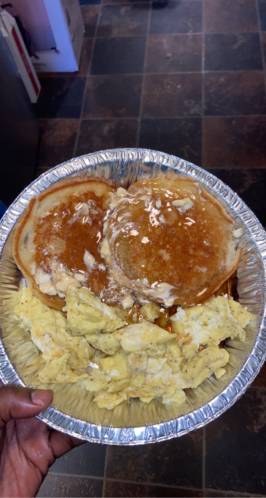

<!DOCTYPE html>
<html lang="en"></html>
    <head>
        <title>Diverse Cooking Inspirations</title>
        <meta charset="UTF-8">
        <meta name="description" content="Breakfast insipirations">
        <meta name="keywords" content="Breakfast, Dinner, Recipe, Vegetarian, Diverse food, Inspirations">
        <meta name="author" content="Tyquan Spurgeon">
        <meta name="viewport" content="width=device-width, initial-scale=1.0">
        <link href="styles.css" rel="stylesheet">
    </head>
    <body>
        <header>
            
                <div class="logo">
                
                </div>
                <div class="container">
                    <h1>Diverse Cooking Inspirations For You</h1>
            </div>
            <nav>
                <ul>
                    <li><a href="index.html">Home</a></li>
                    <li><a href="info.html">Breakfast</a></li>
                    <li><a href="form.html">Dinner</a></li>
                    <li><a href="form1.html">Users Contributions</a></li>

                </ul>
            </nav>
</header>
            
                <div class="container">
                        <h1 class="breakfastHeader" >
                            Breakfast: The most Important Meal of The day
                        </h1>
                </div>

        <main>
            
            <div class="recipe-container">
                
                <div class="recipe-content">
                <h2>Inspirations/Recipes</h2>
                <div class ="recipe-description">
                    <p>  Buttery crisped edege pancakes with a side of delicious seasoned fluffy eggs:
                    This is a quick meal of Mrs. Butter-worths pancake mix with a dash of vinilla extract, seared on a pan with butter and fluffy scambled eggs seasoned with salt and pepper cooked with butter</p>
                </div>
                </div>
                </div> 
        </main>
        <footer>
            
                
                
                <p>Diverse Cooking Inspirations For You </p>
            <p> &copy; 2023 Tyquan Spurgeon, University Of South Carolina, Columbia South Carolina</p>

        </footer>
        

    </body>
</html>
